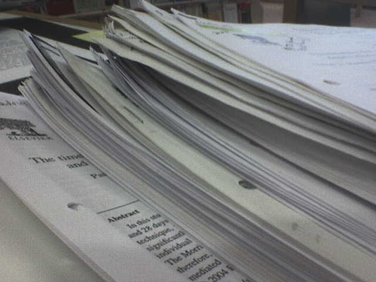
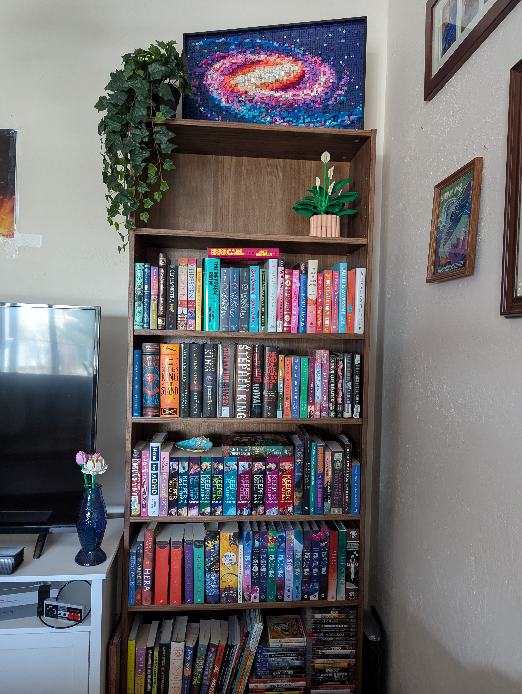

Publishing has always been kind of the benchmark of success for me as a writer. Anyone can be a writer, but it's the act of publishing-or being published-that takes you from writer to author. It's the question I always get asked when I tell someone I'm a writer: have you published anything? As if all the work you do before another person decides your work is worth something is actually meaningless and you're just sitting around doing nothing.

I suppose that's what I feel like I'm doing sometimes, especially when I'm not at a place with my current project that I'm putting a lot of words on paper. When the writing is slow, it can feel like doing a lot of nothing.

But I have to believe it'll all be worth something in the end. That someday my own name will be on one of the books sitting on my bookshelf-and hopefully others' bookshelves, too.

"If something inside of you is real, we will probably find it interesting, and it will probably be universal. So you must risk placing real emotion at the center of your work. Write straight into the emotional center of things. Write toward vulnerability. Risk being unliked. Tell the truth as you understand it. If you're a writer you have a moral obligation to do this. And it is a revolutionary act-truth is always subversive." - Anne Lamott, from her book Bird by Bird